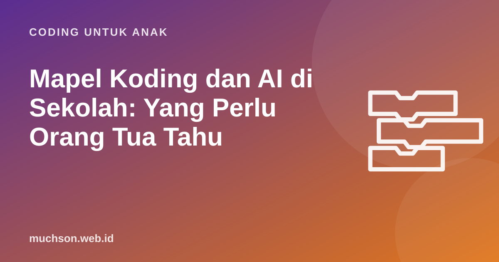

Beranda › Artikel › Coding untuk Anak
Coding untuk AnakMapel Koding dan AI di Sekolah: Yang Perlu Orang Tua Tahu
Sejak tahun ajaran 2025/2026, Koding dan Kecerdasan Artifisial (KKA) menjadi mata pelajaran pilihan di sekolah Indonesia. Banyak orang tua bertanya: apakah anak saya wajib ikut, mulai kelas berapa, dan apa yang perlu disiapkan di rumah? Artikel ini merangkum yang sudah jelas dari kebijakan resminya, dan memberi saran praktis yang tidak bergantung pada sekolah.

Ringkasan kebijakan
| Pertanyaan | Jawaban singkat |
|---|---|
| Dasar hukumnya? | Permendikdasmen Nomor 13 Tahun 2025, perubahan atas aturan kurikulum sebelumnya |
| Mulai kapan? | Tahun ajaran 2025/2026, diterapkan bertahap |
| Kelas berapa? | Dimulai dari kelas 5 SD/MI, kelas 7 SMP/MTs, dan kelas 10 SMA/SMK/MA |
| Wajib? | Tidak. Mata pelajaran pilihan, disesuaikan kesiapan sekolah |
| Kurikulum baru? | Bukan. Pemerintah menyebutnya penguatan kurikulum yang ada melalui pendekatan pembelajaran mendalam |
Menteri Pendidikan Dasar dan Menengah Abdul Mu'ti menegaskan bahwa mata pelajaran ini tidak wajib, dan sekolah yang belum punya sarana dan guru yang siap tidak harus menyelenggarakannya. Kementerian juga menyatakan akan mendukung pelatihan guru dan bekerja sama dengan berbagai pihak untuk penerapannya.
Kebijakan pendidikan bisa diperbarui. Untuk detail terbaru, seperti capaian pembelajaran dan jam pelajaran, rujuk situs resmi Kemendikdasmen atau tanyakan langsung ke sekolah anak.
Kenapa dimulai dari kelas 5?
Kelas 5 SD umumnya berusia 10-11 tahun. Pada usia ini sebagian besar anak sudah lancar membaca, mulai mampu berpikir lebih abstrak, dan bisa memakai komputer dengan cukup mandiri. Rentang ini sejalan dengan usia yang dituju alat belajar coding seperti Scratch.
Apa yang kemungkinan dipelajari?
Materi pasti mengikuti capaian pembelajaran yang ditetapkan kementerian. Secara umum, mata pelajaran koding dan AI di berbagai negara untuk tingkat dasar membahas hal-hal berikut:
Jika sekolah anak belum membuka mapel ini
Karena bersifat pilihan, tidak semua sekolah langsung membukanya. Itu tidak berarti anak tertinggal. Dasar terpenting, yaitu berpikir komputasional, bisa dilatih di rumah dengan cara yang menyenangkan:
- Permainan tanpa layar seperti robot manusia dan tebak angka.
- Scratch untuk membuat animasi dan game sederhana.
- Tantangan Bebras, kompetisi berpikir komputasional tahunan yang soalnya tidak butuh pengetahuan pemrograman.
- Diskusi AI sehari-hari: kenapa rekomendasi video bisa "tahu" kesukaan kita?
Jika sekolah sudah membuka mapel ini
Peran orang tua: mendampingi, bukan mengajar
Orang tua tidak perlu menguasai coding atau AI untuk mendukung anak. Yang paling membantu adalah rasa ingin tahu dan pertanyaan yang tepat:
Persiapan yang bermanfaat apa pun kebijakannya
Terlepas dari mata pelajaran resmi, kemampuan memecah masalah, berpikir runtut, dan memahami cara kerja teknologi akan berguna bagi anak di bidang apa pun. Jika Anda ingin anak memulai dengan jalur terstruktur, PixelKode menyediakan 32 pelajaran coding visual berbahasa Indonesia untuk usia 8-11 tahun, yang melatih konsep-konsep dasar tersebut sebelum anak masuk ke materi AI.
Tanya jawab
Apakah mapel Koding dan AI wajib?
Mulai kelas berapa mapel Koding dan AI?
Apa dasar hukumnya?
Apakah anak perlu les coding agar bisa mengikuti?
Sumber dan bacaan lanjut
- Antara: Permendikdasmen 13/2025, Koding dan AI resmi masuk Kurikulum 2025/2026
- GTK Kemendikdasmen: Permendikdasmen 13/2025 dan pembelajaran mendalam
- Puslapdik Kemendikdasmen: Permendikdasmen 13/2025
- Detik: Koding dan AI berlaku mulai kelas 5 SD